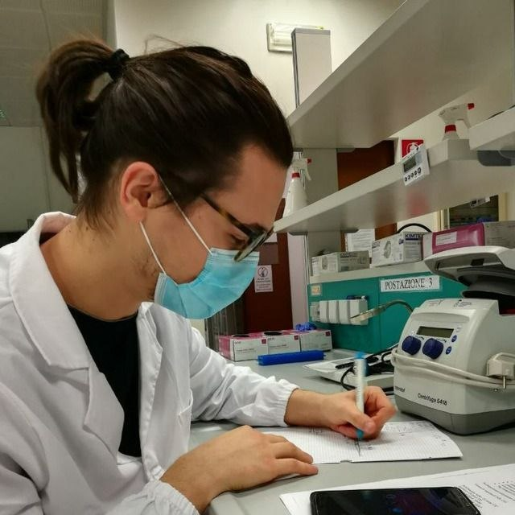

Computational Biologist specialising in
Explainable AI and Omics Data.
I develop open-source tools to demystify complex biological
systems — currently building novel rank-based regression algorithms and robust
bioinformatics pipelines with a commitment to
Open Science and reproducibility.
| BITS 2026 NEXT | Abstract ↓ Poster |
| CIBB 2025 | Abstract ↓ Poster |
Department of Cellular, Computational and Integrative Biology (CIBIO)
University of Trento, Italy
PhD in Biomolecular Sciences — Nov. 2024 – Present
Developing an innovative rank-based regression algorithm tailored to omics data. I apply Explainable Machine Learning methods to extract actionable biological insights from complex datasets.
MSc in Quantitative and Computational Biology, University of Trento (2023).
BSc in Computer Science, University of Trento (2021).
Previously a Research Fellow at CIBIO on the
PREDICTOMICS cardio-metabolic transcriptomics study (2023–2024).
In the era of "black-box" biology, I believe interpretability is as vital as accuracy. My approach to XAI ensures that models provide actionable biological insights rather than just probabilistic predictions.
Open Science is not an afterthought — it is my primary framework. By architecting open-source pipelines, I ensure that my methods are accessible, reproducible, and ready for community-driven iteration.